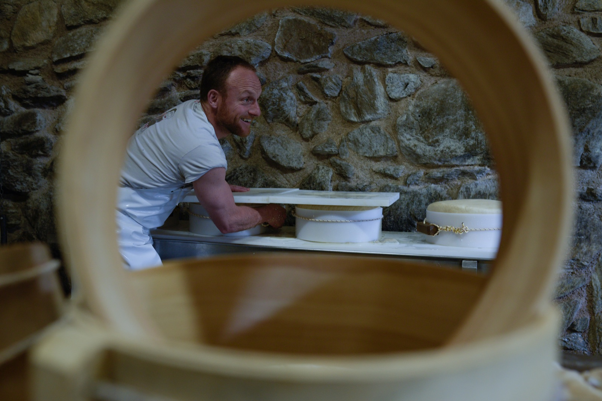
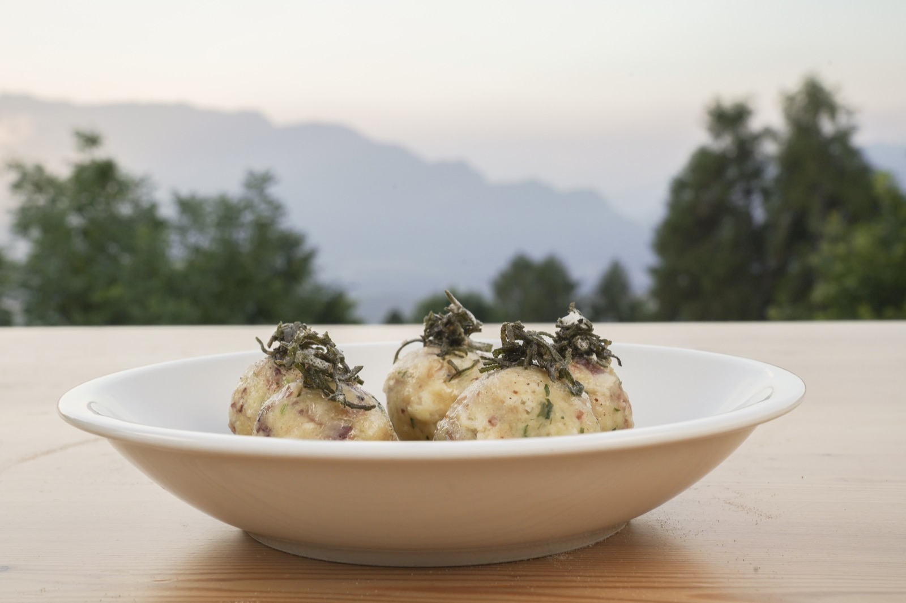
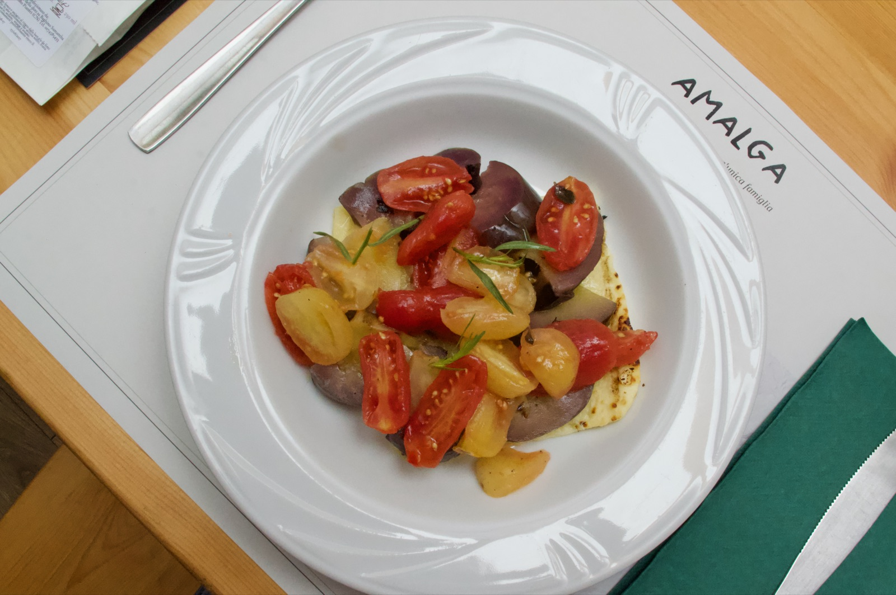
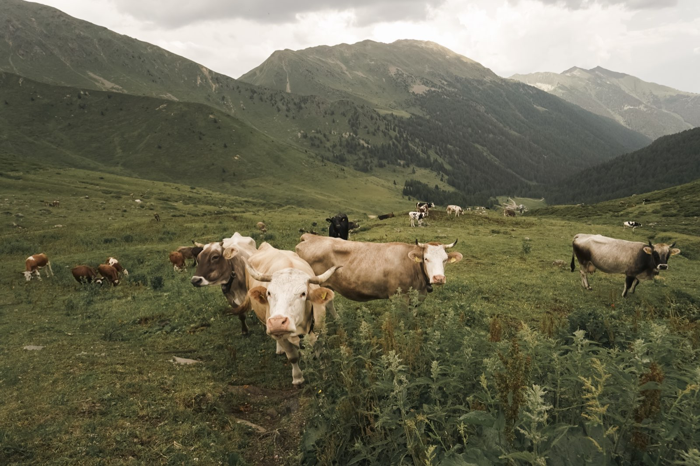
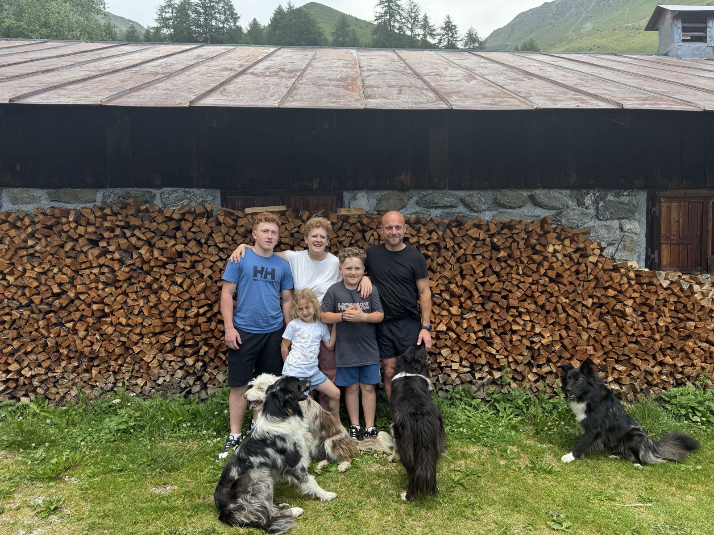

Fattore per un giorno
Il sabato mattina e la domenica pomeriggio i bambini dai 3 ai 9 anni incontrano mucche, caprette, conigli e il cavallo Stella, e imparano facendo. Posti limitati, prenotazione entro il venerdì.
AMALGA è il filo bianco di latte che unisce il gregge e il lavoro del casaro con l'accoglienza autentica della montagna trentina.
Non allevare per vendere, ma vivere per allevare. Da più di quindici anni una famiglia ha scelto la montagna con convinzione, riscoprendo mestieri antichi e costruendo, un pascolo alla volta, un luogo dove il latte appena munto diventa formaggio, e la cucina di malga torna a essere quello che era: vera.
Ogni malga ha il suo carattere e la sua altitudine. Insieme raccontano un solo modo di vivere la montagna: con cura, lentezza, autenticità.
Il punto di partenza di questa avventura, affacciato sulla Val di Non: ristorante, stalla, caseificio e fattoria didattica.
Scopri El Malget →Il cuore produttivo di AMALGA: mucche al pascolo libero, caseificio attivo ogni mattina, spaccio e cucina di montagna.
Scopri Malga Bordolona →Uno dei panorami più belli delle Alpi trentine. Rifugio di montagna, base ideale per escursioni e notti in quota.
Scopri Bordolona Alta →
Ogni mattina il latte appena munto diventa l'Eroico, il nostro stagionato, il Casolet fresco, la ricotta, il burro, lo yogurt e la panna. Formaggi che raccontano l'erba dei nostri pascoli e l'aria delle Maddalene.

Non cerchiamo di stupire, cerchiamo di emozionare con semplicità. Polenta cotta nel paiolo di rame, canederli fatti a mano, taglieri dei nostri prodotti: ricette tramandate, sapori a chilometro zero.

Le mucche pascolano libere e si nutrono dell'erba che cresce spontanea ai piedi delle Maddalene. Un latte autentico, non trattato, munto in malga: si sente nel sapore, nel colore, nella cremosità.



Il sabato mattina e la domenica pomeriggio i bambini dai 3 ai 9 anni incontrano mucche, caprette, conigli e il cavallo Stella, e imparano facendo. Posti limitati, prenotazione entro il venerdì.
Una famiglia che ha scelto la montagna con convinzione. Da più di quindici anni viviamo in malga, riscoprendo mestieri antichi e costruendo qualcosa di nostro — con il rispetto per gli animali e per la terra come fondamento di tutto il resto.
La nostra storiaUna cena, un soggiorno, una giornata in quota. Scegli la malga più adatta a te e prenota direttamente con la famiglia.
Dal 24 ottobre · nel fine settimana